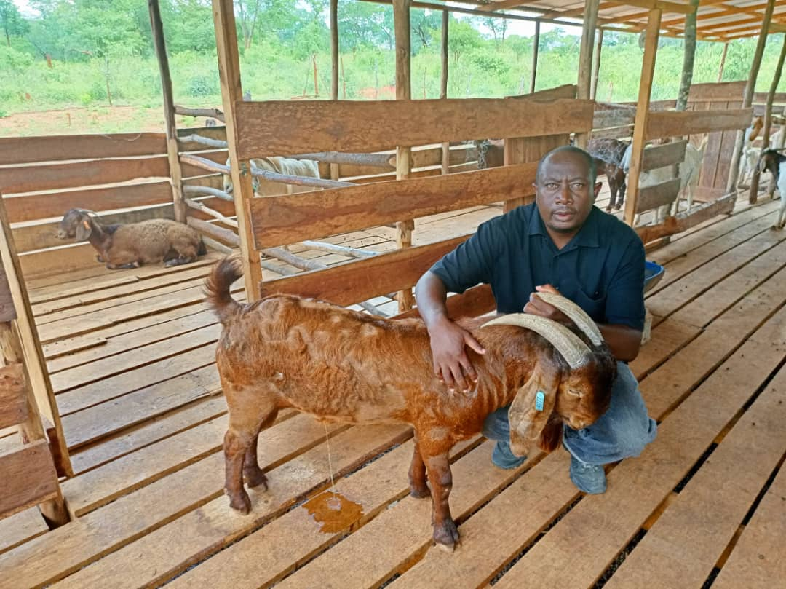
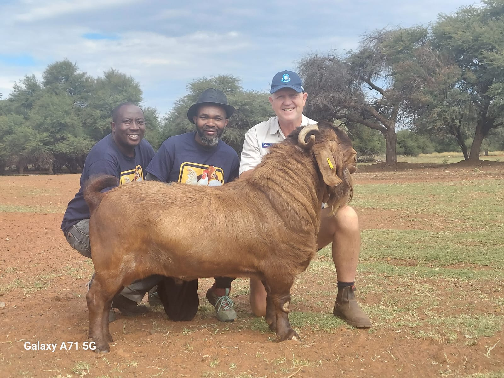

2,000+
Goats Currently Raised
300+
Dorper Sheep Currently Raised
8,000+
Goats & Sheep Raised Since 2016
Award Winner
Best Goat Breed in Zambia
Winner of Best Goat Breed in Zambia · 2,000+ goats on our Rufunsa farm · Raising goats since 2016
CEOT FARMS BY THE NUMBERS
Numbers that reflect 10 years of dedicated, sustainable farming in Rufunsa.
Goats Currently Raised
Dorper Sheep Currently Raised
Goats & Sheep Raised Since 2016
Best Goat Breed in Zambia


We started in 2016 raising layers, broilers and pigs. Over 10 years, goats became our focus. Today we keep 2,000+ goats and 300+ Dorper sheep on our farm in Rufunsa, Lusaka district, and breed for strong health, good size and breeding quality. Our goats have won Best Goat Breed in Zambia, and we sell to buyers at home and ship internationally.
WHAT WE OFFER
Goats are our specialty — available locally and for international shipping. Message us for current availability, breed details, and pricing.
Our specialty and best seller. Award-winning goat breeds — winner of Best Goat Breed in Zambia — known for strong health, good size, and excellent breeding quality. 2,000+ goats on the farm, available locally and for international shipping.
Inquire on WhatsAppTop-quality Dorper sheep, valued for hardiness and excellent meat production. Currently raising 300+ sheep.
Inquire on WhatsAppFresh, top-grade eggs from our layers, available for local supply. Contact us for current availability and pricing.
Inquire on WhatsAppOUR FARM
A look at life on CEOT Sumbak Farms — our goats, sheep, and daily farm operations.
ON YOUTUBE
See our goats, Dorper sheep, and daily farm life at CEOT Sumbak Farms — subscribe to our YouTube channel for regular updates.
To give farmers and buyers, in Zambia and abroad, healthy, well-bred goats they can build a herd on, at fair prices. We also supply Dorper sheep and fresh eggs.
To be the first goat farm buyers think of, in Zambia and beyond, known for award-winning breeding stock raised with care in Rufunsa.